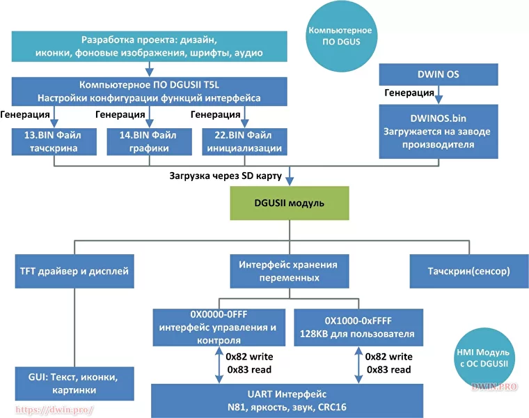
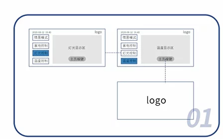
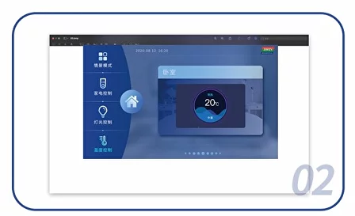
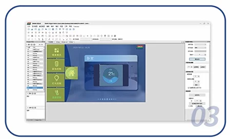
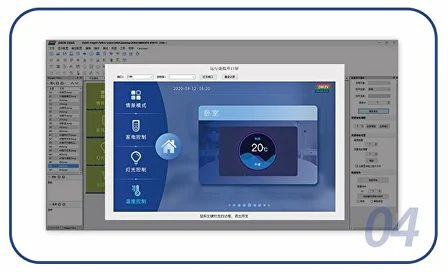
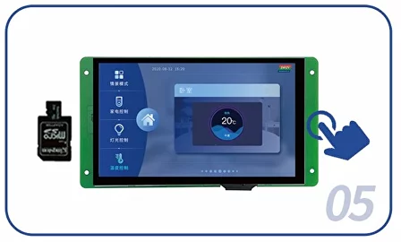

Система разработки DGUS/DGUSII
DGUS это изначальная аббревиатура от DWIN Graphic Utilized Software.
В последствии расшифровка менялась и менялась. Смысл приводить все расшифровки отсутствует т.к. их дословный перевод в любом варианте оставляет желать лучшего.
На русском языке самый лучший понятийный перевод это
Платформа разработки пользовательского интерфейса DWIN.
DGUS уже претерпел изменения и выпущена вторая версия: DGUSII(DGUS 2) с улучшенной архитектурой и другими изменениями.
DGUSII адаптирована к чипу T5L.
ПО DGUS предоставляется бесплатно.
no-code разработка
Создавать графические интерфейсы стало проще
Дизайн-прошивка полностью создаётся в визуальном графическом редакторе. Это позволяет отказаться от традиционного сложного метода разработки с отрисовкой интерфейса через код.
Работа основана на наложении слоев JPEG изображений.
Весь процесс разработки сводится к созданию проекта в компьютерном ПО DGUS, затем генерируются конфигурационные файлы, готовые для загрузи в сенсорные HMI дисплеи.
Первый раз файлы дизайна и настроек загружаются в модуль через SD флеш карту.
Последующие обновления можно делать через UART/RS232...
Изменения в графический дизайн вносятся легко. Достаточно обновить изображения, чтобы изменения вступили в силу. Это очень удобно для персонализации и языковой локализации интерфейса.
В среде присутсвует работа с переменными и чтобы уверенно пользоваться системой разработки DGUSII нужно понимать десятичную/шестнадцатеричную системы счисления.
Система DGUS состоит из двух частей:
Прошивка для процессора T5L*, которая соддерживает DGUS.
Компьютерное ПО для создания дизайн-прошивок: DGUS.

Функции в DGUS логически разбиты
ная - интерактивное взаимодействие пользователя с экраном: нажатия кнопок, ввод данных. Доступно более 10 различных сенсорных функций: ввод переменных и текста, свайп, жесты и др.
Графическая/отображение - вывод информации пользователю: отображение состояния переменных, анимации и пр. Доступно более 23 различных функций отображения: отображение переменных и текста, анимирование значков/иконок, прокрутка текста, вывод графиков и др.
Этапы создания дизайн-прошивки
1

Менеджеры по продукту или дизайнеры пользовательского интерфейса занимаются макетом пользовательского интерфейса и его логическим планированием.
2

Этап красочного оформления интерфейса изображениями и другими элементами в соответствии с прототипом.
3

Перенос изображений в платформу DGUS, наложение сенсорных областей, анимаций и функций. На основе изображений из предыдущего пункта.
4

Предварительный просмотр результата на платформе DGUS.
5

Создание файлов прошивки на основе проекта платформы DGUS. Загрузка файлов в дисплейный HMI модуль.